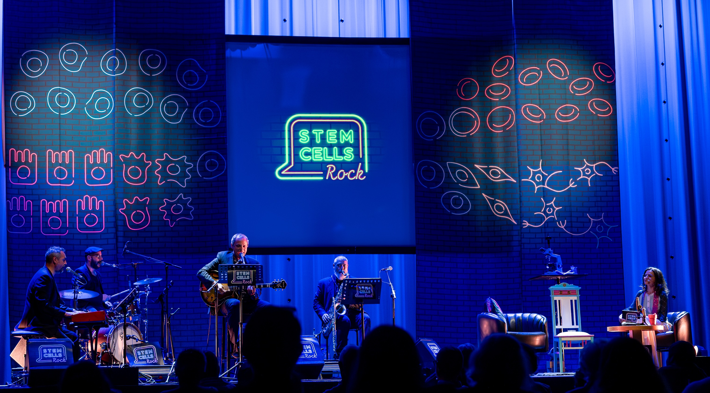

A criação deste "Talk-show" teve o objetivo principal de aproximar os estudantes do ensino secundário da temática das células estaminais e terapia celular. No decorrer da criação do enredo deste espetáculo de teatro-musical fomos percebendo que a maioria das pessoas tem pouca literacia acerca da célula estaminal. Resume-se à noção de que estas células são aquelas que se colhem, a partir do cordão umbilical, na altura do nascimento de um bebé. A sua criopreservação é para muitos pais entendida como "um seguro" que, caso seja necessário, poderá salvar o seu bebé de uma doença, de outra forma, incurável. Como "mais vale prevenir que remediar" muitos pais compram esse serviço sem uma noção exacta do potencial dessas células estaminais. O facto de que os nossos órgãos contêm células estaminais que são fundamentais para a regeneração diária do nosso organismo e de que os acidentes ou a adopção de estilos de vida pouco saudáveis contribui para a exaustão do reservatório de células estaminais é em geral ignorado pela maioria da população. A ideia de que as células estaminais podem resolver tudo (fake news e burlas na internet) e a sua relação com câncro e envelhecimento são também aqui abordadas para informar e alertar para a necesidade de viver saudavelmente.
TALK-SHOW: STEM CELLS ROCK

Casa da Música do Porto em Março de 2026
Investigação
A área de investigação em células estaminais tem evoluído drasticamente nos últimos anos, abrindo inúmeros caminhos e trazendo um vasto leque de conhecimento na área da biomedicina. Aliado ao progresso na área existem variados impactos sociais, económicos e pessoais o que torna urgente uma comunicação apelativa e clara assim como trazer este tema à arena de discussão pública.
Ler mais
Casa da Música Porto em Outubro de 2025
Fale com a nossa "Stem Cell IA" se quiser saber mais
Teatro-Musical
A utilização de linguagens artísticas para comunicar diversos temas científicos tem sido usada com bastante sucesso. A arte tem a capacidade de envolver, despertar emoções e fomentar o espírito crítico, dimensões essenciais para uma comunicação e educação de ciência eficaz. A abordagem educativa através de um “talk-show bem disposto” evita a utilização das expressões: “não podes”, “não deves”, “não faças”...as quais, têm muitas vezes o efeito contrário na sociedade, em particular em camadas mais jovens.
Ler mais
Pavilhão do Conhecimento Ciência Viva Lisboa em Outubro de 2025